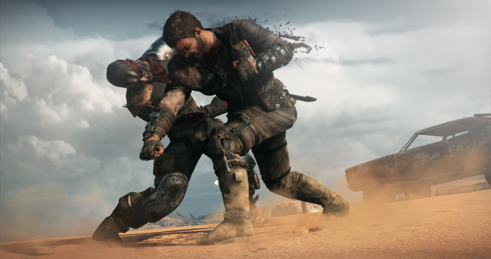
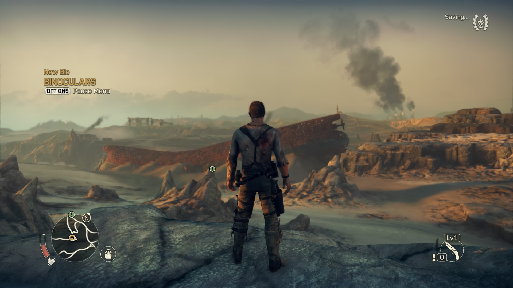

Mad Max.
Game Description:
Mad Max is an action-adventure video game based on the Mad Max franchise. Developed by Avalanche
Studios and published by Warner Bros. Interactive Entertainment, it was released for Microsoft Windows,
PlayStation 4, and Xbox One in 2015. Feral Interactive published the game's macOS and Linux versions.
In the game, players control Max Rockatansky as he progresses through the wasteland building a vehicle,
the "Magnum Opus", to do battle with a gang of raiders, led by Scabrous Scrotus, and to reach the storied
"Plains of Silence", where he hopes to find peace. Mad Max emphasizes vehicular combat, in which players
can use weapon and armor upgrades on their car to fight enemies. It is set in an open post-apocalyptic
wasteland consisting of deserts, canyons, and caves.
Mad Max is an action-adventure game set in an open world post-apocalyptic environment, emphasizing
vehicular combat,in which the player is the eponymous Mad Max (Bren Foster). According to its publisher,
up to 60 percent of the game focuses on driving.Some weapons and tools, including flamethrowers
and turbo boosts, are mounted directly onto the Magnum Opus, while others, such as a grappling hook and
sniper rifle, are used in conjunction with the vehicle by Chumbucket, Max's assistant, or Max himself.
For more details on the game description CLICK HERE!
Screenshot:
 System Requirements
Minimum Requirements:
- OS: Windows 7/8.1/10
- CPU: Intel Core i5-650, 3.2 GHz or
AMD Phenom II X4 965, 3.4 Ghz - RAM: 6GB
- VIDEO CARD: NVIDIA GeForce GTX 660ti
(2 GB Memory or higher) or
AMD Radeon HD 7870 (2 GB Memory or higher) - Storage: 32 GB Hard drive space
- VRAM: 2GB
- PIXEL SHADER: 5.0
- VERTEX SHADER: 5.0
Recommended Requirements:
- OS: Windows 7/8.1/10
- CPU: Intel Core i5-650, 3.2 GHz or
AMD Phenom II X4 965, 3.4 Ghz - RAM: 8GB
- VIDEO CARD: NVIDIA GeForce GTX 760
(3 GB Memory or higher) or
AMD Radeon HD 7970 (3 GB Memory or higher) - Storage: 32 GB Hard drive space
- VRAM: 3GB
- PIXEL SHADER: 5.0
- VERTEX SHADER: 5.0
Watch Mad Max Official Trailer and gameplay below:
Gameplay Video:
How To Download for Respective Platforms
For Consoles:
- Simply select the respective conslie logo below.
- You will be then be taken to site where you can purchase the game.
- Select the game version you want and proceed to payment.


For PC:
- One selection of the specified store icon you will be taken to a new page.
- You must download the required Store for PC.
- Proceed to payment.
- After Payment have been done, you can now download the game.
- If at the time the game is free then simply download the game files.
- Automatically pre-requisites are installed for you.
- Simplylunch the game and enjoy.
- All our links are trusted and verified!
NOTE: To get the most out of the games it is advisable that you purchase the game from the creators.
A link to the official page to get the game is also available below!!